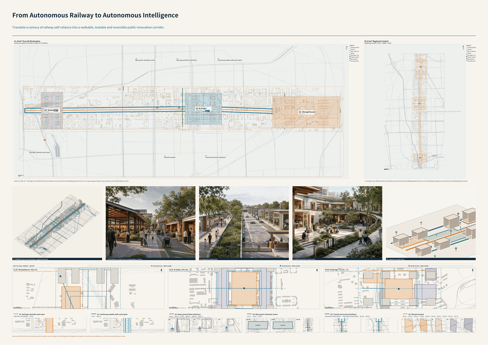
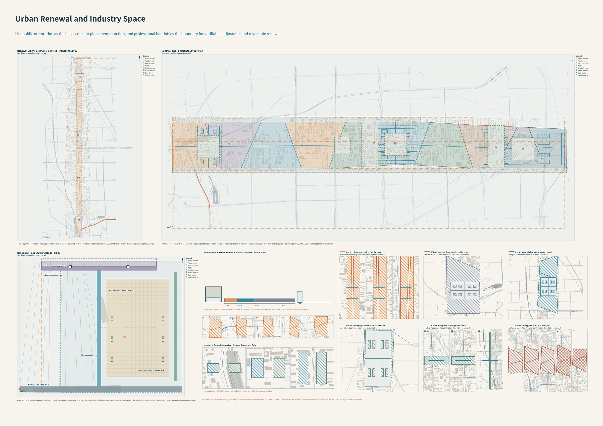
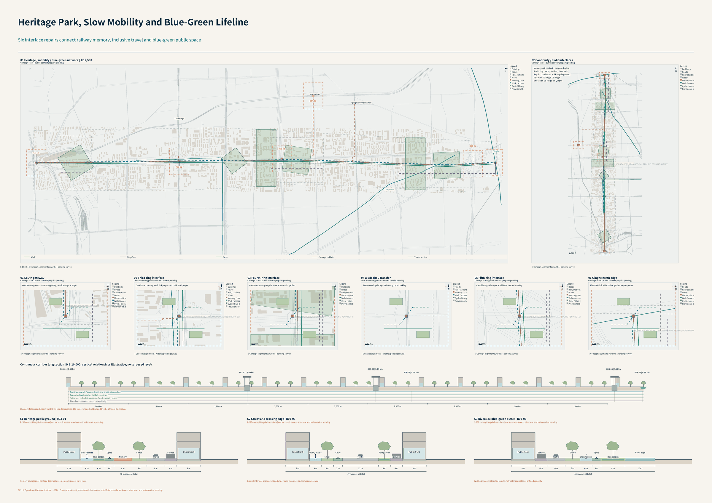
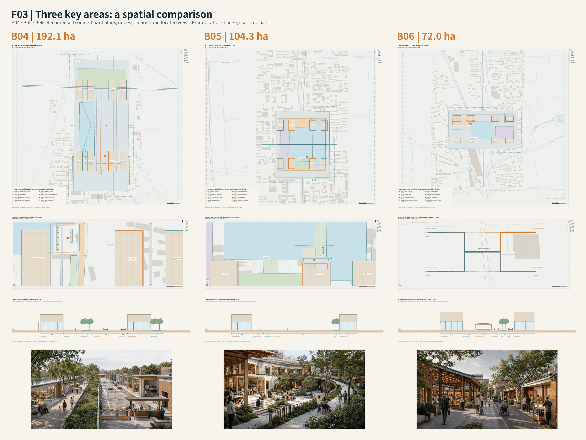
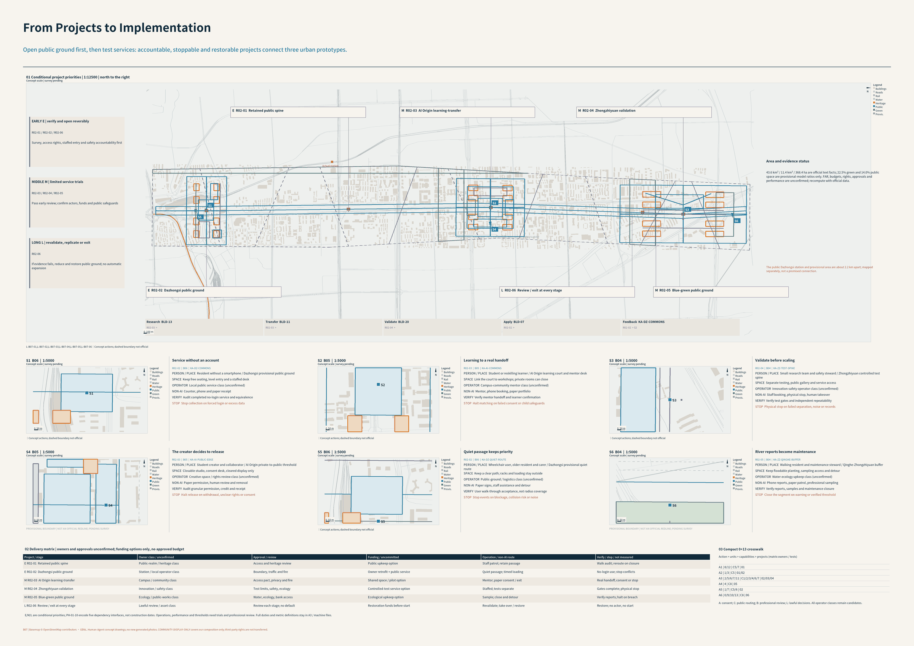

Coordinated research scope
43.6 km²AI ecosystem, research-transfer-validation chain and corridor-wide relations. See B01 and B07.
PROFESSIONAL-V2 / LOCAL OFFLINE EDITION / VISUAL
Translate a century of railway self-reliance into a walkable, testable and reversible public innovation corridor.
This page connects drawings, spatial IDs, tasks and metrics. Official textual areas are distinguished from participant concept geometry; known model values are not official statistics, statutory controls, approvals or measured performance.
The Jingzhang heritage line becomes one continuous public innovation interface connecting three different AI urban districts.
B01 / F01 is the entry map: heritage line, three areas and six spatial actions. B02 covers land use and renewal; B03 mobility and blue-green systems; B04-B06 detailed nodes; B07 implementation and stop rules.

The following scope areas are official textual task facts, not surveyed redlines. The three required key-area textual areas total 368.4 ha.
AI ecosystem, research-transfer-validation chain and corridor-wide relations. See B01 and B07.
Industry-space, renewal, open ground floors, mobility and blue-green systems around the heritage park. See B01-B03.
Zhongzhiyuan 192.1 ha, AI Origin 104.3 ha, Dazhongsi 72.0 ha; each has an area plan, node, ground floor, section and located view.
Read directly from geometry-recomputed metrics.json values. Known means recomputable within this concept model, with low confidence; not official statistics, statutory green ratios or delivered public-access commitments.
site_area_sqm | concept model / low confidence
area(transform(geometry/site_boundary.geojson#PROV-SITE-001, EPSG:4548))
green_ratio | concept model / low confidence
green_space.geojson / site_boundary.geojson
area(unary_union(transform(geometry/green_space.geojson[*], EPSG:4548))) / area(transform(geometry/site_boundary.geojson#PROV-SITE-001, EPSG:4548))
public_space_ratio | concept model / low confidence
public_space.geojson / site_boundary.geojson
area(unary_union(transform(area_features(geometry/public_space.geojson), EPSG:4548))) / area(transform(geometry/site_boundary.geojson#PROV-SITE-001, EPSG:4548))
The model area differs slightly from the textual 11.4 km² because it uses a provisional polygon. It cannot replace a survey. Floor-area ratio, verified step-free continuity and operating performance remain unknown rather than receiving invented numbers.
Use public orientation as the base, concept placement as action, and professional handoff as the boundary for verifiable, adjustable and reversible renewal.
LU-* concept functions and PC-* parcel models connect research/validation, campus transfer, urban services and public ground floors. Retain/retrofit/infill/new-build categories are adjustable design proposals, not an existing-condition survey or demolition decision.
land_use.geojson / parcels.geojson

The 24 BLD identifiers correspond directly to B04-B06. They describe concept spatial hosts and renewal intentions; footprints do not establish floor-area ratio, height, total floor area, ownership or approval.
| ID | Concept use | Renewal intention | A0 |
|---|---|---|---|
| BLD-17 | Low-carbon research | Retain | B04 |
| BLD-18 | Public gallery | Retrofit | B04 |
| BLD-19 | Standards and safety | Retrofit | B04 |
| BLD-20 | Controlled validation | Infill | B04 |
| BLD-21 | Research cluster | Retain | B04 |
| BLD-22 | International exchange | Retrofit | B04 |
| BLD-23 | Shared laboratory | Infill | B04 |
| BLD-24 | Technical support | New build | B04 |
| BLD-09 | Daily support | Retain | B05 |
| BLD-10 | Learning commons | Retrofit | B05 |
| BLD-11 | Incubation / transfer | Retrofit | B05 |
| BLD-12 | Shared support | Infill | B05 |
| BLD-13 | Campus research | Retain | B05 |
| BLD-14 | Mentor workshops | Retrofit | B05 |
| BLD-15 | Public release | Infill | B05 |
| BLD-16 | Residential support | Retain | B05 |
| BLD-01 | Daily services | Retain | B06 |
| BLD-02 | Staffed service | Retrofit | B06 |
| BLD-03 | Agent businesses | Infill | B06 |
| BLD-04 | International exchange | New build | B06 |
| BLD-05 | Timed market | Retain | B06 |
| BLD-06 | Community repair | Retrofit | B06 |
| BLD-07 | AI terminals | Infill | B06 |
| BLD-08 | Content businesses | New build | B06 |
Roads, railway, stations and rivers are registered public context. Spine and gardens are concepts. Repair interfaces are design hypotheses, not a completed site audit.

| ID | Interface and action | Required review |
|---|---|---|
| R03-01 | South gateway Continuous ground + memory paving; service stays at edge | Verify south access rights and heritage constraints |
| R03-02 | Third-ring interface Candidate crossing + rail link; separate traffic and people | Structure, clearance and traffic review required |
| R03-03 | Fourth-ring interface Continuous ramp + cycle separation + rain garden | Verify drainage levels, gradients and structures |
| R03-04 | Wudaokou transfer Station walk priority + side-entry cycle parking | Audit entries, crossings and step-free access on site |
| R03-05 | Fifth-ring interface Candidate grade-separated link + shaded waiting | Existing structure and clearance unverified; form open |
| R03-06 | Qinghe north edge Riverside link + floodable garden + quiet pause | Water, ecology and bank access review comes first |
AI Origin uses 5/10/15-minute shortest-path budgets on registered concept routes at 72 m/min, not radius circles. Signals, campus access rights and step-free conditions require field checks. Service/logistics are separated from walking and cycling at nodes.
Qinghe and Xiaoyue River are registered public context; GS-* and PS-* are concept blue-green and public spaces. B03 links riverside walks, rain gardens, shaded waiting and quiet stays through six interfaces. B04 separates the public river edge from tests; B05 connects learning courts; B06 retains non-commercial passage.
B03 / F04 / B04-B06 / F03 / green_space.geojson / public_space.geojson
Drainage, setbacks, flood capacity and green-space classification remain unverified. Model ratios are not ecological compliance proof. Public-space area is deduplicated from polygonal features; scenario and landmark points do not add area.

192.1 ha | PROV-KEY-001
192.1 ha: a public river-garden and gallery; research, controlled tests and service stay distinct.
L-ZZ-01 | B04
104.3 ha | PROV-KEY-002
104.3 ha: learning courts and a slow loop connect private work, shared transfer and public life.
L-AI-01 | B05
72.0 ha | PROV-KEY-003
72.0 ha: public, commercial, quiet and service layers; actual-station quadrants are located separately.
L-DZ-01 | B06
Dazhongsi limitation: the PROV-KEY-003 provisional-area centre is about 2193 m from the public station anchor. B06 separately locates the provisional public ground and actual-station quadrant proposals. No boundary was shifted and no bridge, tunnel, entrance or connection is claimed to be approved.
Six R02 renewal projects are located in B02 and connected to actors/phases in B07. Actors are candidate responsibility classes, funding is optional, and approvals and budgets are uncommitted.

| ID | Project and anchor | Candidate actor / operation | Review / indicator |
|---|---|---|---|
| R02-01 | Retained public spine PS-01 | Public-realm / heritage class Staff patrol; retain passage | Access and heritage review Walk audit; reroute on closure |
| R02-02 | Dazhongsi public ground PS-02 | Station / local operator class Quiet passage; timed loading | Boundary, traffic and fire No-login use; stop conflicts |
| R02-03 | AI Origin learning-transfer PS-03 | Campus / community class Mentor; paper consent / exit | Access pact, privacy and fire Real handoff; consent or stop |
| R02-04 | Zhongzhiyuan validation PS-04 | Innovation / safety class Staffed; tests separate | Test limits, safety, ecology Gates complete; physical stop |
| R02-05 | Blue-green public ground GS-01 | Ecology / public-works class Sample; close and detour | Water, ecology, bank access Verify reports; halt on breach |
| R02-06 | Review / exit at every stage PH-09 | Lawful review / asset class Revalidate; take over / restore | Review each stage; no default Restore; no actor, no start |
Each of the six scenarios has a person, place, spatial action, candidate operator, equivalent non-AI entry and stop rule. These are not deployed services or automatic administrative decisions.
Resident without a smartphone / Dazhongsi provisional public ground
Keep free seating, level entry and a staffed desk
Local public service class (unconfirmed)
Non-AI: Counter, phone and paper receipt
Success: Audit completed no-login service and equivalence
Stop: Stop collection on forced login or excess data
Student or reskilling learner / AI Origin learning court and mentor desk
Link the court to workshops; private rooms can close
Campus-community mentor class (unconfirmed)
Non-AI: Mentor, phone booking, paper portfolio
Success: Verify mentor handoff and learner confirmation
Stop: Halt matching on failed consent or child safeguards
Small research team and safety steward / Zhongzhiyuan controlled test spine
Separate testing, public gallery and service access
Innovation-safety operator class (unconfirmed)
Non-AI: Staff booking, physical stop, human takeover
Success: Verify test gates and independent repeatability
Stop: Physical stop on failed separation, noise or records
Student creator and collaborator / AI Origin private-to-public threshold
Closable studio, consent desk, cleared display only
Creative-space / rights review class (unconfirmed)
Non-AI: Paper permission, human review and removal
Success: Audit granular permission, credit and receipt
Stop: Halt release on withdrawal, unclear rights or consent
Wheelchair user, older resident and carer / Dazhongsi provisional quiet route
Keep a clear path; racks and loading stay outside
Public-ground / logistics class (unconfirmed)
Non-AI: Paper signs, staff assistance and detour
Success: User walk-through acceptance, not radius coverage
Stop: Stop events on blockage, collision risk or noise
Walking resident and maintenance steward / Qinghe-Zhongzhiyuan buffer
Keep floodable planting, sampling access and detour
Water-ecology upkeep class (unconfirmed)
Non-AI: Phone reports, paper patrol, professional sampling
Success: Verify reports, samples and maintenance closure
Stop: Close the segment on warning or verified threshold
Industrial renewal and public-space change cannot be decided only inside development and technology organizations. Decidim connects online proposals, debate, support, face-to-face meetings, and progress tracking through reusable open-source participation infrastructure. Jingzhang can translate this into C maintaining public issues, responsibilities, and state, with paper/community meetings and digital routes sharing one case number. It cannot copy local planning, property, or political procedures or treat online counts as representation. Destination: AI Origin Community, Dazhongsi renewal, and SC-FINAL-11.
[source:CASE-BARCELONA-DECIDIM]
A smart-city program can begin with a grand system without proving whether daily life improves. City officials, firms, residents, and researchers tested small solutions in a real district; “one more hour a day” returned value to resident time. Jingzhang can translate reversible low-disturbance pilots, stop conditions, and resident time/task evidence. It cannot turn a successful pilot directly into permanent deployment or use visitor interest as outcome evidence. Destination: Xiaoyuehe Scenario Wing, SC-FINAL-09, and SC-FINAL-12.
[source:CASE-HELSINKI-KALASATAMA]
Industry, a university, community life, and district operations are often built as separate systems. Punggol combines an adjacent university/business district, an Open Digital Platform, and digital-twin testing. Jingzhang can translate interface-based infrastructure, segregated test environments, simulation before physical operation, and industry-education collaboration. It cannot copy centralized collection, boundaryless real-time data, or biometric access; every call still needs necessity, authorization, and an accountable actor. Destination: Zhongzhiyuan verification, AI Origin learning-to-work, SC-FINAL-06, and SC-FINAL-10.
[source:CASE-SINGAPORE-PDD]
Digital-content and information-industry concentration requires more than buildings: infrastructure, eligible activities, public support, and ongoing responsibilities must be defined. Seoul uses a municipal ordinance to define the district, core industries, and support functions. Jingzhang can translate the simultaneous design of spatial carriers, responsibility catalogues, and operating rules, plus a Dazhongsi mix of digital content, AI-native consumption, and enterprise service. It cannot copy Seoul's industry list, land development, incentives, or government commitments. Destination: Dazhongsi and SC-FINAL-06.
[source:CASE-SEOUL-DMC]
Universities, laboratories, firms, start-ups, and urban life remain islands unless resource density is actively connected. Paris-Saclay combines an urban campus, innovation-place network, research-industry links, public transport, and natural/agricultural protection. Jingzhang can translate a Zhongguancun B-side network, Zhongzhiyuan engineering verification, and a shared venue catalogue while treating water, ecology, and quality of life as constraints. It cannot copy a large greenfield district, airport access, investment scale, or development conditions. Destination: Zhongzhiyuan and the Zhongguancun Professional-Service Wing.
[source:CASE-PARIS-SACLAY]
A technology partner's urban-data and spatial proposal can conflict with public authority, privacy, project scope, and democratic accountability. Waterfront Toronto created an independent Digital Strategy Advisory Panel; after withdrawal, the lasting lesson was that governments must remain central and digital innovation must meet democratic-accountability standards. Jingzhang can translate authority/data/model gates and independent review before technology enters public space. It cannot copy an “urban data” construct, allow a vendor to replace government, or reduce the withdrawal to one privacy cause. Destination: Capability Eight, SC-FINAL-10, and SC-FINAL-11.
[source:CASE-TORONTO-QUAYSIDE]
Goal: complete service, complaint, and care tasks without complex AI. Barriers: jargon, codes, handoffs, and hearing/vision change. Non-AI: phone, counter, community, paper, lawful proxy. Only task materials are processed; no permanent capability score. Success: one case, understandable state, human takeover. Worst failure: algorithmic denial with no accountable person. Scenarios: SC-FINAL-01/02/08.
Goal: complete journeys, services, and participation independently or with chosen help. Barriers: broken accessible routes, single-format information, and systems overriding the person. Non-AI: accessible phone, staffed service, paper/large print/sign language, lawful proxy. Support needs are minimal and revocable. Success is equivalent outcome, not merely a channel. Worst failure: the system reports access while the physical route fails. Scenarios: SC-FINAL-05/09/10.
Goal: connect learning, research, and ideas to verification, collaboration, and opportunity. Barriers: fragmented resources, unclear provenance, and minor/campus boundaries. Non-AI: teachers, school counters, libraries, physical labs. Work is private by default and distinguishes human, third-party, and AI contributions. Success: explainable matching, portable work, and failure feedback. Worst failure: permanent labeling or unauthorized training. Scenarios: SC-FINAL-03/07.
Goal: use one sentence to find real administrative, procurement, workforce, and operating help. Barriers: repeat forms, false opportunities, and limited time. Non-AI: enterprise counter, chamber/community service, accountable advisor. Secrets and labor data are segregated; no enterprise/talent total score. Success: accurate first routing, fewer repeat materials, recoverable exit. Worst failure: an Agent makes a final hiring, finance, license, or procurement decision. Scenarios: SC-FINAL-04/06/11.
Goal: test, reproduce, comply, and reach markets on a sovereign replaceable stack. Barriers: compute/tool lock-in, unclear test-site responsibility, and compliance cost. Non-AI: professional panel, paper test plan, human acceptance. Code, models, data, and secrets are segregated. Success: cross-stack reproduction, complete gates, retained negative results. Worst failure: a demo skips into human/physical operation. Scenarios: SC-FINAL-06/07/10.
Goal: route issues to the true responsible body and explain waiting, conflict, and closure. Barriers: changing catalogues, multi-department handoffs, offline records, and inconsistent emergency information. Non-AI: duty phone, paper ledger, on-site meeting, human command. Only duty-necessary information is used with source/version. Success: closed handoffs, retained minority opinions, and reconciled offline recovery. Worst failure is misattributed responsibility; C cannot approve and cannot exercise emergency command. Scenarios: SC-FINAL-01/08/11/12.
These twelve formal cards are the full index behind the six spatial examples on B07. The six examples do not replace the twelve complete accountability chains.
Personas PERSONA-01/06; community-subdistrict. A transcribes after confirmation; C checks the public responsibility catalogue and preserves the original; B verifies accessibility/professional facts; L accepts, decides, and remedies. Paper, phone, counter, and Agent share one case ID. Metrics: first-route accuracy, due response, remedy closure. Misrouting cannot auto-close; human correction, appeal, and deletion of unnecessary copies remain. Later: service nodes, responsibility map, metrics figure.
Personas PERSONA-01/02; home-community-health network. A structures the account but never diagnoses; C links public directories; medical B reviews; emergency rescue/lawful decisions remain with L. Phone, clinician, counter, and emergency routes remain parallel. Health data is granular and shortest-retained. Metrics: referral completion, takeover, non-AI equivalence. Uncertainty/danger stops advice and escalates. Later: service nodes and emergency interfaces.
Persona PERSONA-03; campus-community-park. A manages work/authorization; C matches public courses/opportunities; education, labor, and IP B review; admission, discipline, and permissions remain with L. School counter, teacher, and offline activities remain. Minor data/work is private by default. Metrics: explanation, conversion, portability. No permanent capability score; preserve reasons, correction, and exit. Later: AI Origin learning nodes and scenario map.
Personas PERSONA-01/04/06; building-community. A organizes evidence/choices; C routes property, subdistrict, and professionals; building/fire/legal B inspect; L retains administrative decisions. Phone, duty room, paper, and on-site meeting remain. No resident credit score. Metrics: site verification, state accuracy, restoration closure. Structural/fire risk escalates; disputes retain appeal. Later: buildings, constraints, phasing.
Persona PERSONA-02; station-street-public space-destination. A holds chosen preferences; C combines authoritative states; transport/access B verifies on site; restriction/rescue remains with L. Phone, staffed enquiry, paper route, and Agent are parallel. Location is used only when necessary. Metrics: end-to-end completion, breakpoints, takeover. Site evidence overrides stale data for safety and records the breakpoint. Later: roads/public_space and mobility figure.
Personas PERSONA-04/05; person-park-Three Areas/Two Wings. A manages materials/quote permissions; C matches public opportunities/B services; contract, labor, tax, IP, and safety B review; procurement, license, finance, and disputes remain with accountable actors. Enterprise counter, professional meeting, and roadshow remain. Secrets are segregated. Metrics: first routing, first paid task, exit recovery. Ban false opportunities and final Agent decisions. Later: industry nodes, project list, land-use figure.
Personas PERSONA-03/05; private space-trusted meeting-public display. A preserves original words, versions, and permissions; C verifies requester/routes only; IP/contract/privacy B review; adjudication/remedy remains with L. Paper deposit, witnessed meeting, and human contract remain. Distinguish person/third-party/AI contribution. Metrics: provenance, permission fields, receipts, revocation. Deposit is not title; no unauthorized training/publication. Later: display nodes, copyright statement, evidence-chain figure.
All personas; city-district-community-facility. A shows personal needs/offline guidance; C only relays authorized information/synchronizes state; fire/water/medical/communications B verify; warning, command, evacuation, and rescue priority remain with L. Broadcast, phone, community, paper, backup radio, and messengers remain. Emergency minimum data expires. Metrics: accessible reach, continuity, takeover, reconciliation. Conflicts escalate to L; digital recovery never overwrites paper. Later: constraints, phasing, resilience figure.
Personas PERSONA-02/06; street-station-public space. A submits photo, oral account, or paper as chosen; C routes the responsible actor and shows state; transport/access/engineering B inspect; construction/enforcement decisions remain with L. Landmark reports work without precise location. Metrics: verification, reasons, repair, retest. Image models supply clues only; remove unrelated faces and allow correction. Later: roads/public_space/key-areas.
Personas PERSONA-02/04/05; controlled test site-public edge. A narrow interlock may stop only under all six conditions; A helps affected persons report; C freezes/routes event state; safety/engineering/medical/legal B verify; closure, rescue, liability, and restart remain with L. Physical stop/human response take priority. Metrics: stop, takeover, notice, revalidation. No-injury cannot erase a near miss; no restart before review. Later: test nodes, constraints, risk figure.
Personas PERSONA-01/04/06; community-key-area public space. A helps people understand/submit; C groups issues without erasing minority views; planning/transport/access/operations B assess; procedure/decision remains with L. Meeting, paper, noticeboard, phone, and Agent are parallel. Confirm attribution before publication. Metrics: participation access, minority response, reasons, commitments. Majority count cannot bypass rights/safety; retain review/appeal. Later: public_space, key_areas, A0 issue board.
Persona PERSONA-06 and nearby residents; Qinghe/Xiaoyuehe-community-professional network. A stores observations as chosen; C clusters clues/routes; ecology/water B samples on site; enforcement, warning, and works remain with L. Phone, patrol, paper, and on-site reports remain. Minimize location and remove unrelated faces. Metrics: verification, threshold action, maintenance feedback, long-term retest. Models never replace monitoring; good-faith false reports are not punished; no closure without restoration evidence. Later: green_space, constraints, ecology figure.
The eighteen candidate cards from v0.4-v0.6 retain their provenance role. The three cards below expand Capability Six's existing industrial test subjects into executable validation subcards of SC-FINAL-06 and SC-FINAL-10. They do not change the count of twelve deduplicated formal cards or count as additional deployments or completed experiments. Each uses four gates: offline/simulation, isolated or closed, controlled human/physical, and limited operation. Moving forward requires site rights, an accountable operator, applicable professional/statutory conditions, lawful inputs, human takeover, and withdrawal/restoration arrangements. Locations, targets, and responsibilities below are concept recommendations; baselines, threshold confirmation, results, and operating performance remain unmeasured.
The conceptual controlled-test back-of-house at Zhongzhiyuan B04; only rights-cleared results reach the public gallery. Researchers, developers, and startup teams in PERSONA-03/05, linked to SC-FINAL-06.
Replaceable models, tool interfaces, permissions, and delivery chains. Inputs are version-locked code/configuration, licensed or synthetic examples, a sealed task set, a human baseline, and fault cases; unauthorized production systems stay disconnected.
The same version and input can be replayed, while interface substitution retains explainable outputs and migration records. Permission refusal, tool failure, and uncertain output must support human takeover. Record task completion, reproduction consistency, unauthorized requests, takeover, and exit recovery item by item. Professional reviewers lock thresholds before testing; no achieved performance is claimed here.
A candidate park-test operator owns site control and records; the research team owns versions and evidence; data, cybersecurity, AI-safety, and industry professionals independently review. Procurement, permits, and disputes remain with accountable actors or L.
Unclear input rights, unreproducible results, unauthorized calls, or loss of rollback stops the round. Isolate credentials and retain necessary logs; use offline manual operation, a paper test sheet, and professional acceptance. A successful demo is not admission to operation.
[source:CHECKPOINT-V06]
Zhongzhiyuan B04's conceptual test back-of-house and public/test boundary, deepening SC-FINAL-10. Accessibility, safety, and work needs of PERSONA-02/04/05 are acceptance conditions; public paths are not default test sites.
Point-to-point transport, obstacle response, handover, and return in a verified closed site. Inputs include a survey-verified test map, boundaries and obstacle arrangements, authorized or synthetic cases, a task list, and stop/takeover records. The provisional masterplan must not become a robot control map.
Complete tasks within the authorized test boundary with trace and handover evidence. People, obstacles, communication failure, or uncertain localization trigger the previously validated safety response or takeover by the site lead. Record boundary deviations, near misses, stops, takeover, and retest results; no permission for operation on public roads or among crowds is claimed.
A candidate test-site operator and on-site safety lead control entry and stopping; the robotics team provides technical evidence; engineering, accessibility, fire/medical, and other applicable professionals review. L retains statutory matters in closure, rescue, and resumption.
A boundary breach, near miss, failed stop chain, or absent responsible staff stops physical testing. Follow the reviewed plan after separating people from the hazard; use manual transport, human guidance, or simulation for the equivalent task. No resumption before review; negative results cannot be removed.
[source:CHECKPOINT-V06] [source:HAIDIAN-SUPER-TESTFIELD-2026]
The conceptual staffed public-ground-floor counter at Dazhongsi B06 and transfer-service front desk at AI Origin B05. Residents, small-shop operators, and community workers in PERSONA-01/04/06, deepening SC-FINAL-06 and connecting to SC-FINAL-01.
A complete task from a one-sentence request through material organization, authoritative-directory matching, human review, and a delivery receipt. Inputs are versioned public service/business-support directories, minimum user-selected materials, anonymous or synthetic evaluation cases, and a same-task manual baseline.
One case identifier continues across online, telephone, counter, and paper channels. Accountable staff can verify materials, routing, and receipts; people declining AI receive equivalent service. Record first-routing accuracy, repeated materials, elapsed time, human escalation, and exit recovery. Delivery is not an approval, financing award, procurement win, or business income.
Candidate community/business-service operators maintain counters and records; service teams update directories; labor, contract, tax, IP, and accessibility professionals review as needed. Eligibility, adverse decisions, permits, and remedy stay with L or accountable actors.
Conflicting directories, wrongful refusal, material leakage, or withdrawal of consent stops automation and alerts responsible staff. Preserve originals; use telephone, counter, paper, or professional meetings for correction, appeal, and delivery. No permanent person/enterprise score is created.
[source:CHECKPOINT-V06]
A public node for self-reliant engineering, open release, and ordinary people's ideas, with small launches, version archives, paper/accessible expression, and contributor-chosen attribution. It is neither a giant monument nor an official award. Rotating curation, community/campus stewardship, and rights inventory support operation; people can participate without digital recording. Siting waits for heritage, access, ownership, fire, and crowd review.
A transparent interface where residents, developers, professionals, and lawful actors observe that testing can stop and roll back, displaying positive/negative results, takeover, data scope, and exit. It is not a routine face-collection site or unauthorized human experiment. Risk-tiered access, failure-first disclosure, safety separation, accessibility, emergency stop, medical response, and withdrawal are prerequisites; siting waits for formal spatial/professional review.
A continuous narrative connecting Jingzhang engineering history, ordinary life, and contemporary innovation through the heritage park, communities, and innovation nodes. Sound, text, models, and revocable resident contributions support it; historic images/slogans do not replace spatial design. Operation requires copyright/portrait clearance, rotation, offline interpretation, and accessible guidance. Fixed installations remain subject to heritage, railway, water, ecology, and public-space procedures.
Q1-Q4 below describe a future complete operating year, not events already held in 2026, confirmed dates, or government commitments. Scenario opening, developer communities, resident participation, public experience, international communication, conversion, and maintenance/audit form one cycle. Every activity first protects the right not to participate, non-digital entry, daily life, accessibility, fire safety, rights clearance, and post-event restoration. Hosts, operators, site rights, funding, and procurement remain unconfirmed; missing conditions mean postponement, reduced scope, or off-site exchange.
| Q | Theme / places | Open products / conversion evidence | Candidate roles / entry gate |
|---|---|---|---|
| Q1 | Open-source reproduction and real-needs season; AI Origin learning interface and Zhongzhiyuan test back-of-house | Anonymous/paper-inclusive needs register, rights-cleared task sets, and version-locked reproduction plans; a request is not automatically a project | Candidate campus/park operators, community workers, and IP/data professionals; verify input rights, sites, and non-AI participation first |
| Q2 | Safety validation and urban-test season; Zhongzhiyuan controlled-test back-of-house | Staged tests of the three industrial cards, positive/negative results, and human-takeover drills; only cases passing the preceding gate advance | Candidate test operator, on-site safety lead, industry professionals, and applicable lawful authorities; no entry into public crowds without authorization |
| Q3 | Public innovation and Jingzhang culture season; heritage-memory segment and Dazhongsi public ground floor | Rights-cleared open-source releases, opt-in resident-contribution exhibits, offline interpretation, and a segmented public experience route; no default face/voice collection | Candidate public-space/cultural operators, community and accessibility staff; verify heritage, passage, fire safety, and exhibit removal/restoration |
| Q4 | International exchange, transfer, and annual-review season; AI Origin front desk, Zhongzhiyuan public gallery, and professional network | Rights-cleared bilingual case packs, independent retests, voluntary professional matching, follow-up after lawful contracting, and a public annual review; no procurement, investment, or attraction quotas promised | Candidate community/park operators, developer communities, and legal/IP/international-exchange professionals; unverified or uncleared results cannot support attraction claims |
One developer Q&A/reproduction clinic and one non-digital resident consultation each week, staffed by candidate park/community operators with professional support. Each month: one candidate-scenario opening/closure review, one accessibility/facility-maintenance check, and one public experience day only within confirmed safety and rights boundaries. Paper, telephone, and in-person channels share an issue identifier; declining digital participation does not remove service. No responsible staff, inadequate stop/restoration conditions, or interference with daily passage cancels the on-site event in favor of a briefing or individual human service.
The candidate segmented route links the Dazhongsi staffed ground floor, Jingzhang engineering-memory segment, AI Origin learning court, and Zhongzhiyuan public gallery/Qinghe interface. Open segments only after B03 station-entry, access-rights, continuous-accessibility, and weather checks; concept links are not claims of existing reachability. International communication uses the same rights-cleared Chinese/English version, explainable test methods, and positive/negative results. Residents may contribute by real name, pseudonym, or without attribution and retain withdrawal routes.
Register needs, including anonymous/paper requests; verify rights, sites, and responsibilities; fix a versioned test plan; independently retest and preserve negative results; publish cleared outcomes and offer voluntary professional matching; have accountable actors review contracts/permits; then follow delivery, maintenance, and annual learning. Failed validation cannot become an attraction success or scale-up claim. Reproduction, non-AI equivalence, complaint response, takeover, and recovery are continuing indicators with real values still to be collected. Major gaps trigger suspension, human takeover, withdrawal, restoration, and retesting; attendance is not a substitute for public value.
Complete source narrative: proposal.en.md
All 23 requirements from compliance_matrix.json are listed with seven-board reading links. Coverage means a concept response and evidence pointers exist; it does not mean official acceptance or professional approval.
compliance_matrix.json / design_depth_matrix.json / standard_matrix.json
Internal board records: 14/14 bilingual boards have empty blocking_findings. This concerns drawing/evidence consistency, not passage through the four official gates.
The three declared metrics come directly from the same metrics.json. All four HTML pages have no scripts, forms or external resources. The final official checks must run after files and the manifest are frozen. Read the packaged self_check.json for the effective result; this page does not freeze a potentially stale all-passed label.
self_check.json / manifest.json
A: consent; C: public routing; B: professional review; L: lawful decisions. All operator classes remain candidates.
Basemap © OpenStreetMap contributors · ODbL. Human-Agent concept drawings; no new generated photos. COMMUNITY-DISPLAY-ONLY covers our composition only; third-party rights are not transferred.
The official announcement and Agent taskbook establish textual scopes and tasks. Public road, station, river and building context follows its source register. Colored BLD / KA / RD / GS / PS layers are participant concepts. Existing registered atmosphere images are not site photographs or exact reconstructions; this HTML repair adds no images.
| ID | Assumption and limit | Resolution condition |
|---|---|---|
| A-BOUNDARY-001 | The overall polygon is provisional, not an official surveyed redline. | Replace it with authoritative geometry and recompute in EPSG:4548. |
| A-KEY-AREAS-001 | All three key-area geometries are rough provisional inputs. | Replace boundaries and existing-condition surveys before detailed implementation. |
| A-DAZHONGSI-001 | The provisional Dazhongsi area and actual station do not coincide. | Seek official clarification; no entrance, bridge, tunnel or access approval is inferred. |
| A-CONTROLS-001 | Authoritative statutory, rail, water, heritage, fire and utility constraint geometry is missing. | Obtain licensed authoritative layers; engineering and statutory conclusions remain blocked. |
| A-EXISTING-001 | Existing use, ownership, capacity and operational evidence is incomplete. | Survey and professionally verify before claiming demolition, height, floor area or investment. |
| A-METRICS-001 | Known values are low-confidence, recomputable concept-model outputs. | Recompute after geometry changes; actual performance requires lawful samples and independent review. |
| 0+13 | Unit | Source / spatial reference / metric |
|---|---|---|
| 0+13-00 | Overall Thesis | OFFICIAL-ANNOUNCEMENT / RD-01 / site_area_sqm |
| 0+13-01 | Mobility | OFFICIAL-ANNOUNCEMENT / RD-01 / walk_connectivity_ratio |
| 0+13-02 | Land Use | OFFICIAL-ANNOUNCEMENT / LU-01 / site_area_sqm |
| 0+13-03 | Spatial Structure | OFFICIAL-ANNOUNCEMENT / RD-01 / site_area_sqm |
| 0+13-04 | Ecology | CHECKPOINT-V09 / GS-01 / green_ratio |
| 0+13-05 | Education | AGENT-TASKBOOK / SN-03 / education_goal_confirmation_rate |
| 0+13-06 | Health and Care | AGENT-TASKBOOK / SN-02 / health_need_confirmation_rate |
| 0+13-07 | Industry | OFFICIAL-ANNOUNCEMENT / LU-02 / industrial_test_scenario_count |
| 0+13-08 | Culture | AGENT-TASKBOOK / PS-01 / creativity_attribution_accuracy_rate |
| 0+13-09 | Data | SITE-PACKAGE / PH-03 / identity_authorized_reuse_receipt_rate |
| 0+13-10 | Governance | AGENT-TASKBOOK / PH-01 / governance_first_route_accuracy_rate |
| 0+13-11 | Community | AGENT-TASKBOOK / PS-01 / housing_community_service_reachability_rate |
| 0+13-12 | Implicit Spatial Order | SUBMISSION-LEDGER / RD-01 / walk_connectivity_ratio |
| 0+13-13 | Risk, Safety and Resilience | AGENT-TASKBOOK / PH-01 / identity_emergency_human_takeover_rate |
43.6 km² / 11.4 km² / 368.4 ha are official text facts; 22.5% green and 14.0% public space are provisional-model ratios only. FAR, budgets, rights, approvals and performance are unconfirmed; recompute with official data.
The public Dazhongsi station and provisional area are about 2.2 km apart; mapped separately, not a promised connection.
A0 submission PDFs retain native 150 ppi dimensions with JPEG compression; lossless archival PDFs are retained separately. Board text is not vectorized. A3 editorial text is searchable. Publication grants no construction, funding, operation or submission authority.